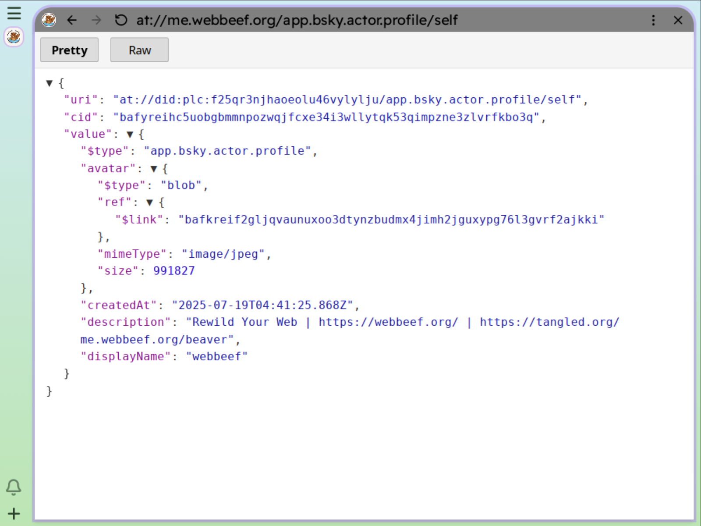
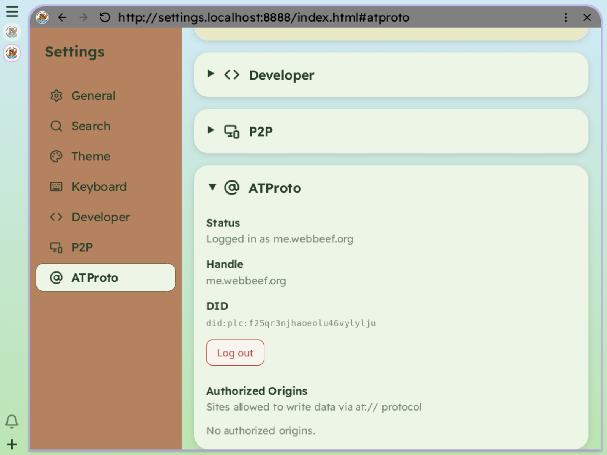
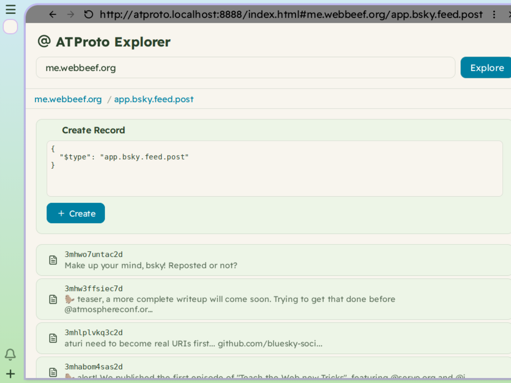
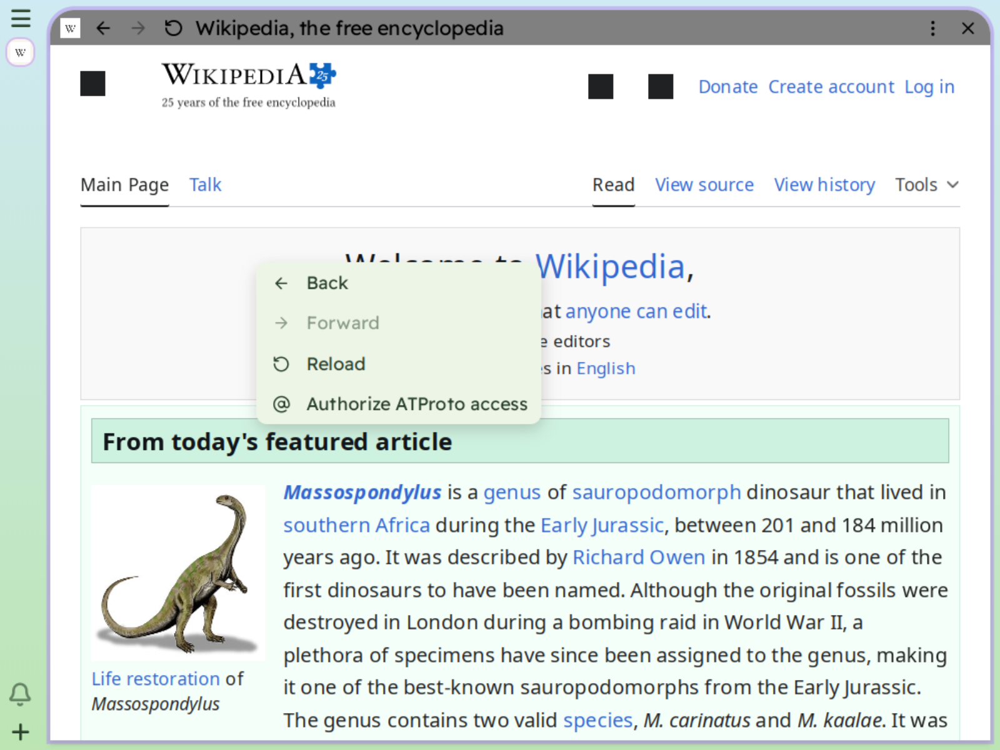
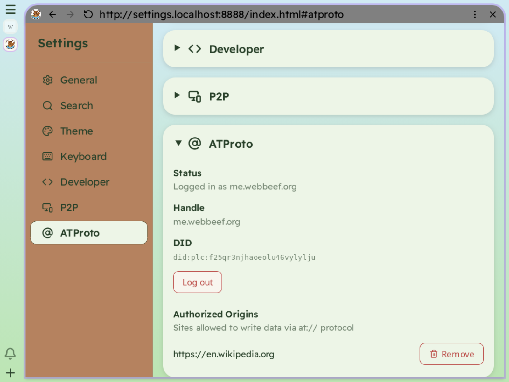

The Authenticated Transfer Protocol ("AT Protocol" or "atproto") is a network protocol for building open social web applications.
Adding native support in Beaver is meant to ease the development of ATProto applications without requiring a complex setup (OAuth anyone?) or even a backend. Beaver acts as a broker that deals with authorization and abstracts protocol details.
All the records stored in an atproto PDS (Personal Data Server) are identified by a URI. This URI scheme (at://) is defined in this document and has some serious issues but hopefully they will be resolved before long.
Our implementation allowws read access to all at:// URIs from any web page. This is consistent with the public nature of data stored in ATProto. If you are logged in, we extended the capabilities of the at:// protocol to allow the usage POST and DELETE methods to create and delete records.
We deviate from or add to the "spec" in a couple of places:
Here's what loading an at:// Uri looks likes

Instead of having each app go through the OAuth dance or ask for an app password, we added a small DOM API accessible to privileged contexts (like our system UI and the settings app). This API includes methods to log in, log out and check the current state of your ATProto session.
When you are logged in, Beaver at:// protocol handler will set the proper bearer token to the xrpc endpoints of your PDS by itself, and manage refreshing the token when required.

We have a simple "ATProto explorer" app that leverage this to explore your PDS data, and offers a simplistic interface to create records.

ATProto records can be typed and validated against a schema (called a "lexicon" in the ATProto world). It would be really interesting to create a library of custom elements that can display a record based on its type.
The AT Explorer app is a privileged app in Beaver, but it's obvious that we need a way to let the user decide which web pages can have write access to their data. To enable that we added support for authorized origins: when you are logged in ATProto, the context menu has an additional item that let you authorize a page:

You can manage your authorized origins in the ATProto settings:

Notably, we did not add an API to let pages request ATProto access. This would likely be source of annoyance.
The current implementation is "all or nothing" in terms of what an authorized app can access. An obvious improvement will be to define scopes that are then enforced in the at:// protocol handler. There's a balance to find there to protect the user and its data, but also have a pleasant user experience.
Beaver could also create reports of an page activity (which collections are used, for what purpose) for users that are curious about an app behavior and to improve trust.
ATProto is not the only existing protocol to create an open social web. The other major one is ActivityPub, underpinning the Mastodon federated social network.
Where ATProto has Personal Data Servers, ActivityPub is organized around what we could call Communal Data Servers instead. That's a different - not better or worse - model.
We'd love to had first class support for ActivityPub in Beaver, but it's unclear to us if the FEP-07d7 proposal is what we need. Any help figuring this out will be greatly appreciated!
Updated Mar 26 2026